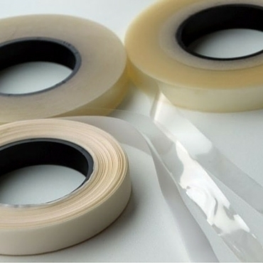

Artigos

Tem uma estrutura em rede que oferece resistência para diversos fins, sendo indicada para cortar a direito ou a viés.

Alta visibilidade para aplicações costura, transfer ou adesivas

Fitas em Napa revestida a PVC, com base em algodão ou em tricot nylon
Tem uma estrutura em rede que oferece resistência para diversos fins, sendo indicada para cortar a direito ou a viés.
Alta visibilidade para aplicações costura, transfer ou adesivas
Fitas em Napa revestida a PVC, com base em algodão ou em tricot nylon

Tecidos e forros lisos ou estampados personalizados
Acessórios

Vulgarmente conhecidas por "Velcro".

Inclui elásticos simples de interior em várias larguras, jardineiras, rolinho ou caseado.

Disponíveis em 66 cores de cartaz e são comercializadas em opções de bobines industriais com metragem variável

Tecidos em tear cuja construção formada por riscas finas confere o aspeto canelado e rugoso característico do gorgorão.

Duas qualidades de fitas de Organza, a T100 e T094, em várias larguras e cores.

Com o propósito de aplicação no rebordo interior de chapéus, bonés ou boinas.

É colocada sobre a costura, e posteriormente fundida e colada sob aplicação de calor.

São construídas com robustez tornando-as extremamente fortes e resistentes
Vulgarmente conhecidas por "Velcro".
Inclui elásticos simples de interior em várias larguras, jardineiras, rolinho ou caseado.
Disponíveis em 66 cores de cartaz e são comercializadas em opções de bobines industriais com metragem variável
Tecidos em tear cuja construção formada por riscas finas confere o aspeto canelado e rugoso característico do gorgorão.
Duas qualidades de fitas de Organza, a T100 e T094, em várias larguras e cores.
Com o propósito de aplicação no rebordo interior de chapéus, bonés ou boinas.
São construídas com robustez tornando-as extremamente fortes e resistentes